Welcome to vitoliot_store
Enjoy the doc!
Task
Create a software system designed to store information about trading on the commodity exchange
Solution
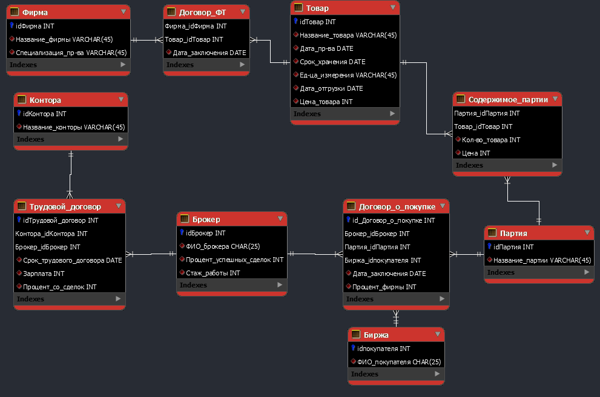 Pict. 1 Infological model
All requests
| # | Request | Score |
|---|---|---|
| 1 | 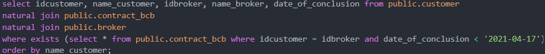 | 8 |
| 2 | 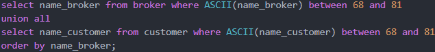 | 8 |
| 3 | 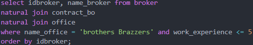 | 4 |
| 4 | 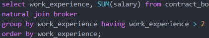 | 6 |
| 5 | 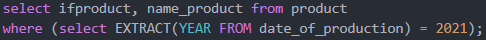 | 4 |
| 6 | 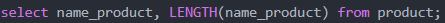 | 2 |
| 7 | 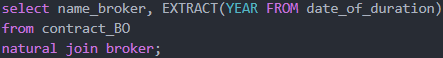 | 4 |
| 8 | 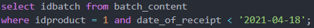 | 2 |
| 9 | 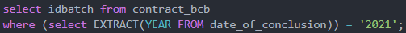 | 4 |
| 10 | 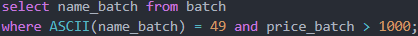 | 3 |